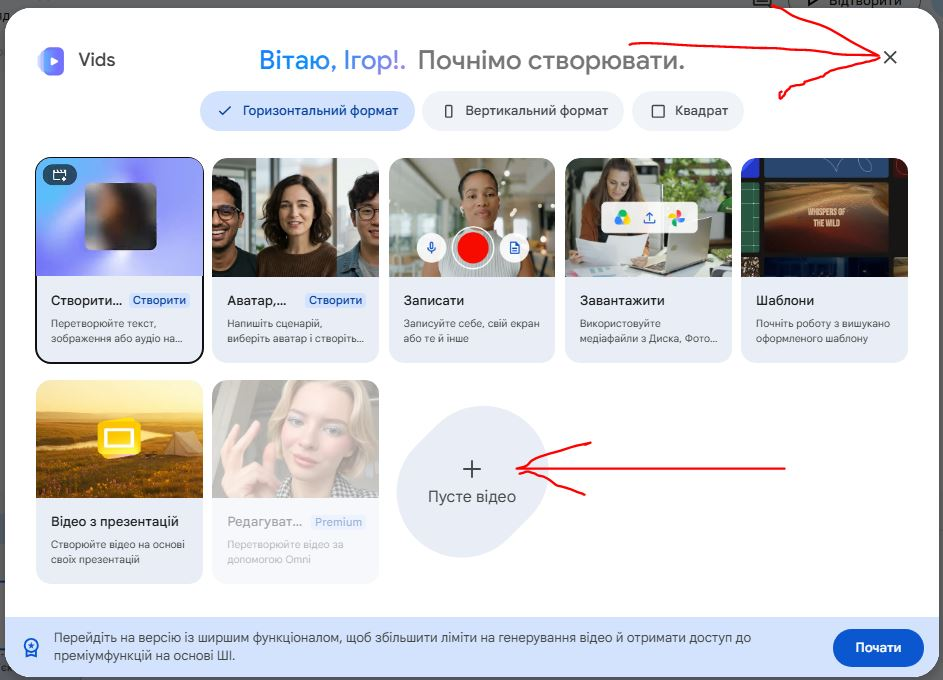
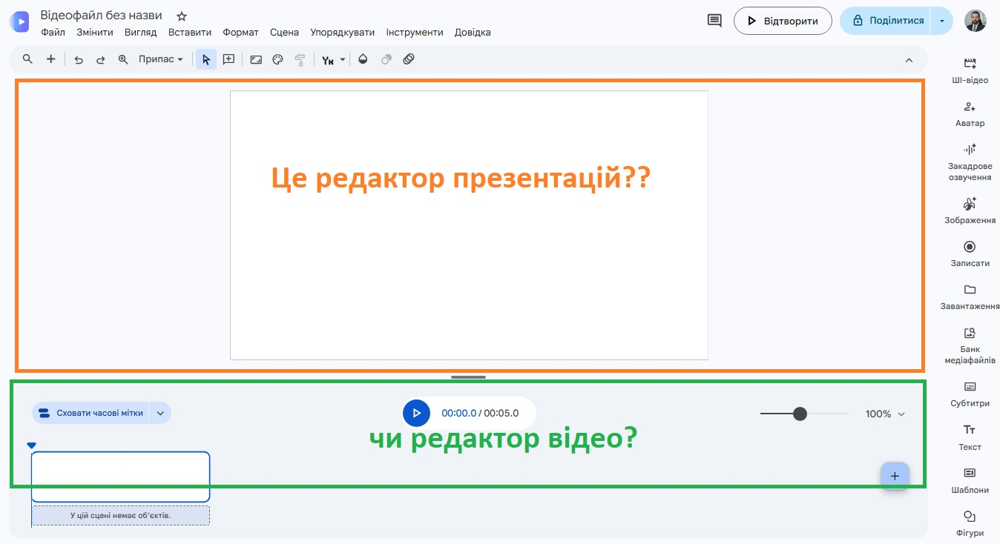
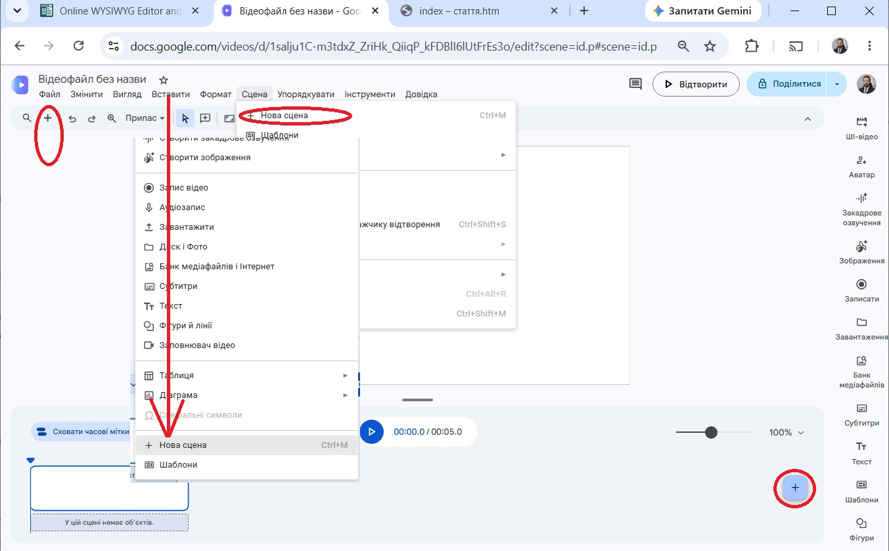
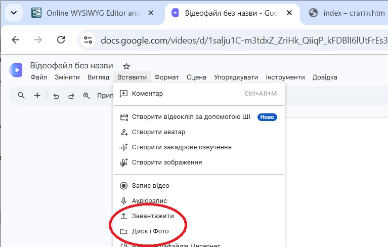
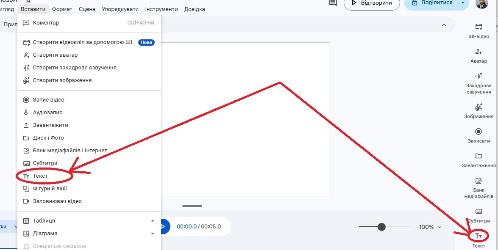
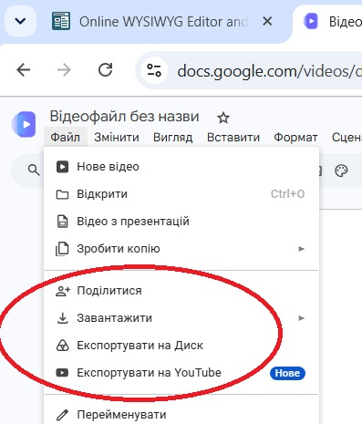

<table style="height: 221px; margin-left: auto; margin-right: auto;" width="688">
<tbody>
<tr style="height: 11.6px;">
<th style="width: 680.667px; height: 11.6px; background-color: yellow;">
<p><iframe src="menu.htm" width="700" height="110"></iframe></p>
</th>
</tr>
<tr style="height: 254px;">
<td style="width: 680.667px; height: 254px; vertical-align: top;">
<p style="text-align: justify;">Відносно новий застосунок від Google &mdash; Vids було придумано з тою метою, щоб презентації, створені в Microsoft PowerPoint або Google Slides, стали фільмами, де слайди міняють один одне автоматично, а презентація, змінивши формат pptx на mp4, відкривалася в усіх&nbsp;у відеоплеєрі (який мають всі користувачі, чого не скажеш сьогодні про застосунки Microsoft Office).</p>
<p style="text-align: justify;">Можна задіяти Vids як відеоредактор з кількома базовими функціями, якщо мета стоїть скучний відеорепортаж перетворити на яскраве відео за умови, що запис не перевищує 30 хвилин. Але більше різних функцій відеоредагування вам нададуть такі проекти для редагування відео як Movavi Video Editor, Open Shot, а також онлайн-відеоредактори на сайтах <a href="https://online-video-cutter.com" target="_blank">online-video-cutter.com</a> і <a href="https://clideo.com" target="_blank">clideo.com</a></p>
<p style="text-align: justify;">Якщо ви працювали раніше з одним із цих редакторів, і також маєте досвід розробки презентації, а ще доводилося розробляти презентації чи монтувати фільми в онлайн-дизайнері <a href="https://canva.com" target="_blank">canva.com</a>, то можна пообіцяти вам впевнене орієнтування і розуміння процесів виробництва в межах цієї програми.&nbsp;</p>
<p style="text-align: justify;">Отже, будемо мати справу з хмарним онлайн-застосунком, який не потребує встановлення на ваш комп'ютер. Ви заходите на сайт програми <a href="https://vids.google.com" target="_blank">vids.google.com</a> для миттєвого запуску програми і початку творчості (якщо на вашому комп'ютері ви залоговані в ваш обліковий запис Google, про наявність&nbsp;облікового&nbsp;запису як такого навіть і не ставитимемо питання на даному етапі розвитку технологій. Вам пропонується створити новий проект (хрестик, пофарбований в кілька кольорів) або відкрити існуючий. Будемо вважати, що жодного ще нема, то в нас вибір тільки створення нового проекту. А далі бачимо ось таку заставку з опціями входу.</p>
<p style="text-align: center;"></p>
<p style="text-align: justify;">Початківцям слід обирати варіанти початку роботи, показані на зображенні червоними стрілками. З призначенням інших альтернатив, нескладно буде розібратися пізніше. Новачкам завжди краще починати проекти з чистого аркушу для розуміння, як вони працюють.</p>
<p style="text-align: center;"></p>
<p style="text-align: justify;">В результаті отримуємо ось такий інтерфейс. В ньому ми для початку спробуємо створити першу презентацію. Тобто створюємо кілька слайдів і заповнюємо різноманітними фотографіями. Пропонується кілька способів створити новий слайд (на додаток до автоматично створеного початкового).</p>
<p style="text-align: center;"></p>
<p style="text-align: justify;">А ось так вставляють медійні файли з хмарного сховища Google або зі власного комп'ютера.</p>
<p style="text-align: center;"></p>
<p style="text-align: justify;">А так починається залучання тексту до слайду.</p>
<p style="text-align: center;"></p>
<p style="text-align: justify;">А зараз за відеозразком змонтуйте презентацію.</p>
<p style="text-align: center;"><iframe title="YouTube video player" src="//www.youtube.com/embed/fYvJ4w7re2I" width="560" height="315" frameborder="0" allowfullscreen="allowfullscreen"></iframe></p>
<p style="text-align: justify;">А цей арсенал команд меню Файл дозволить поділитися доступом до проекта для перегляду чи спільного редагування, а також зберегти на комп'ютері, на своєму Google Drive чи каналі Youtube.</p>
<p style="text-align: center;"></p>
</td>
</tr>
<tr style="height: 68px;">
<th style="width: 680.667px; height: 68px; background-color: cyan;">Розробка сайта Ігоря Глаголевського, 2026 р.</th>
</tr>
</tbody>
</table>
